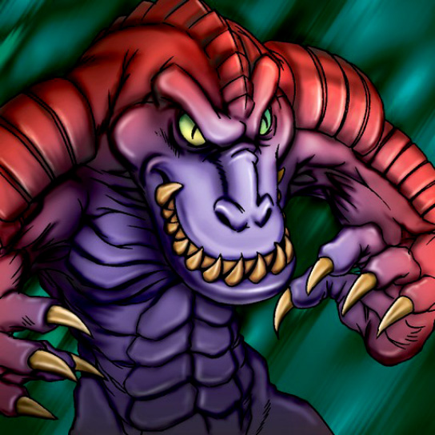

Anthrosaurus

STATS
ATK: 1000
DEF: 850DECK COST
Deck Cost per Card: 19Fusion List (6 Possible Fusions)
- Anthrosaurus + Bat = Cyber Saurus
- Anthrosaurus + Brave Scizzar = Cyber Saurus
- Anthrosaurus + Cyber-Stein = Cyber Saurus
- Anthrosaurus + Cyber Commander = Cyber Saurus
- Anthrosaurus + Larvae Moth = Sword Arm of Dragon
- Anthrosaurus + Mechanical Snail = Cyber Saurus